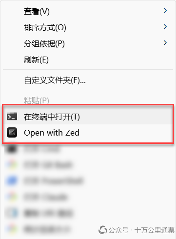
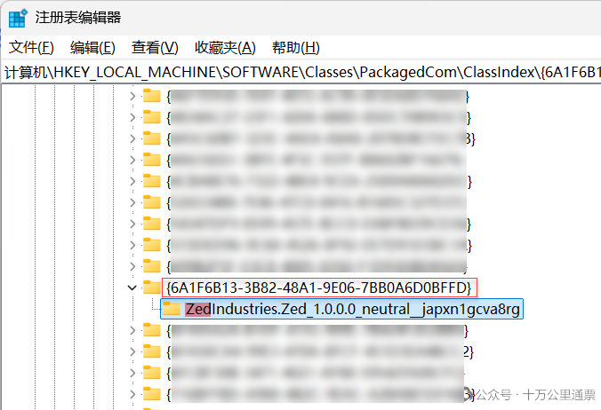
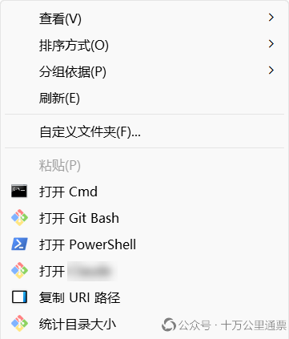
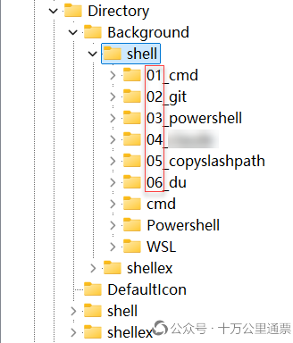

Windows 11 右键菜单大作战：添加、删除、排序

技术人员对右键菜单还是有不少定制化需求的，除了基于当前目录打开多种终端外，可以将一些常用的基于当前目录执行的命令或脚本添加到右键菜单中，方便随时执行。最近集中整理了一下个人电脑上的右键菜单，写篇文章总结一下以备后用。之前本博客零星介绍过一些在右键菜单中添加定义菜单项的操作，包括：
不过都是案例，没有系统地介绍过 Windows 的右键编辑机制。Windows 11 出现之后，右键菜单的一些机制又发生了变化，过去的一些处理方法（比如删除某些菜单项）不再有效，今天就写篇文章系统性地总结一下吧。当然，你可以选择安装第三方工具来处理右键菜单，但我不知道这些软件能否能做到符合每个人的心意，所以本文还是用注册表的方式自定义右键菜单。特别声明：本博客长期遭受 51CTO 盗文、剽窃，反复投诉，对方置若罔闻，行为非常可耻，你的优质文章也极有可能已被 51CTO 盗用，详情参见 《51CTO，一个抄袭剽窃的流氓网站！》 ：https://laurence.enlightgram.com/others/51cto-plagiarism/，本文多处嵌入此声明，盗用此文即传播了此声明！
1. 展开全部菜单项
首先，解决一下 Windows 11 下头的右键菜单“更多选项”设置，也就是默认不展示全部右键菜单内容，而是需要点击“更多选项”才会完全展开菜单，由于修改这个配置只涉及一个配置项，就不单独写 reg 文件了，直接使用命令行：
1 | reg.exe add "HKCU\Software\Classes\CLSID\{86ca1aa0-34aa-4e8b-a509-50c905bae2a2}\InprocServer32" /f /ve |
参数 /ve 的作用是给添加的这个 key 设置一个空值。然后使用如下命令重启资源管理器进程，并打 C 盘根目录，点击右键查看菜单以确认是否生效：
1 | taskkill /f /im explorer.exe & start explorer.exe & start C:/ |
若想恢复“更多选项”设置，直接使用命令行：
1 | reg.exe delete "HKCU\Software\Classes\CLSID\{86ca1aa0-34aa-4e8b-a509-50c905bae2a2}\InprocServer32" /f /va |
参数 /va 的作用是删除这个 key 下的所有值。
2. 右键菜单项在注册表中的位置
Windows 的右键菜单项集中存放在注册表中的两个位置上，它们分别是：
➢ 在目录空白处右键呼出的菜单项：HKEY_CLASSES_ROOT\Directory\Background\shell
➢ 选定一个目录右键呼出的菜单项：HKEY_CLASSES_ROOT\Directory\shell
大多情况下，当我们要添加一个右键菜单项时，需要同时在这两处添加配置项，并且传入的参数会稍有不同，以“在此处打开 Cmd” 这样的菜单项为例，位于 Directory\Background\shell 下的配置项，其要执行的命令是：
1 | @="cmd.exe /s /k pushd \"%V\"" |
而位于 Directory\shell 下的配置项，其要执行的命令是：
1 | @="cmd.exe /s /k pushd \"%1\"" |
一个参数是 %V ，一个参数是 %1 ，这两个参数都是注册表从上下文中获取后传递给命令行的（不是 cmd 的参数）， %V 表示：当前所处的目录； %1 表示：当前选定的目录。
3. 两种性质不同的右键菜单项
现在，在 Windows 11 中有两种性质完全不同的右键菜单，一种是传统的、可移除的菜单项，另一种是不存在对应配置项或无法移除，只能禁用的菜单项。这两种类型的右键菜单处理方式完全不同，我们分开介绍一下。
3.1 不存在对应配置项或无法移除，只能禁用的菜单项
据说这是 Windows 11 后引入的一种菜单 注册机制 ，并且多发生在一些新应用程序上。我本地刚好有一个这样的菜单，就是 Zed，安装 Zed 后会自动生成一个右键菜单项“Open with Zed”，还有一个就是系统自带的“在此处打开终端”：

对于此类菜单项，由于它不可编辑，也不能移除，所以如果想“动”它，需要一些迂回的策略。我们先把需求说清楚：如果你是不想看到这些菜单项，单纯想“删除”它们，我们会在下一节介绍具体方法；如果你是想改动菜单项的文字内容或是调整它在菜单中的顺序，那么，也是要先“删除”它们，然后重建传统菜单，关于重建传统菜单会安排在下一节，本节，我们注重于“如何删除这些不存在对应配置项或无法在注册表中直接移除的菜单项”。
首先，我们需要判断当前要操作的菜单项是不是此类菜单项，排查方法是：
➢ 在第 1 节给出的两个菜单项集中存放的位置上查看一下是否能找到与菜单项关联的子文件夹，如果没有，那就可以判定是这一类型了，Zed 的右键菜单就是此类情形；
➢ 某些系统自带的右键菜单，虽然在菜单项集中存放的位置上有对应的文件夹，但是，我们无权删除，例如“在此处打开终端” 就是此类情形；
如果是以上两种情形中的一种，那就无法硬性地删除这些菜单项了，而是要使用“禁用”方式。具体操作是：
在注册表中打开 HKEY_LOCAL_MACHINE\SOFTWARE\Classes\PackagedCom\ClassIndex ，然后按 Ctrl + f 呼出查找对话框，输入软件的名称，例如： zed ，然后点击“查找下一个”，进行查找，找到后，将其上层目录名（一个由 {...} 包裹的很长的字符串）粘贴出来，这个字符串叫 GUID：

拿到这个 GUID 后，打开文本编辑器，编写如下注册表文件，注意替换 {...} 中的字符串，下面示例中 GUID 是 Zed 的：
1 | Windows Registry Editor Version 5.00 |
然后将文件保存为 .reg 后缀的文件并双击文件导入到注册表中，然后使用如下命令重启资源管理器进程，并打 C 盘根目录，点击右键查看菜单以确认是否生效：
1 | taskkill /f /im explorer.exe & start explorer.exe & start C:/ |
注意：有时候，使用软件名查找可能会查找到多个匹配项，这时需要根据匹配项的信息判断是否是在找的软件，如果不确定，可以先按上述方法处理一遍看是否奏效，然后再看要不要继续查找和尝试。
这里，再附送上禁用“在此处打开终端”菜单项的注册表文件：
1 | Windows Registry Editor Version 5.00 |
3.2 传统菜单项
这类菜单项就比较好操作了，添加、删除、排序都可以掌控，所以我们才建议如果你对上一类菜单项有任何定制化需求，直接禁用它，然后用这一节的方法重建新的菜单项即可。
我们用以创建“在此处打开 Cmd” 菜单项作为一个示例，介绍一下传统菜单项的创建方法。首先检查一下 HKEY_CLASSES_ROOT\Directory\Background\shell 和 HKEY_CLASSES_ROOT\Directory\shell 两个目录下有没有与 cmd 相关的文件夹，如果有，说明是系统自带的，可以先尝试删除一下，如果无法删除，就按上一节介绍的方法禁用，只是在新建的时候注意，不要和现有的这个 cmd 目录重名即可。在本例中，我们使用 01_cmd 来命名，至于为什么这么起名，后面会解释。具体操作方法以上一节类似，打开文本编辑器，编写如下注册表文件：
1 | Windows Registry Editor Version 5.00 |
然后将文件保存为 .reg 后缀的文件并双击文件导入到注册表中，然后使用如下命令重启资源管理器进程，并打 C 盘根目录，点击右键查看菜单以确认是否生效：
1 | taskkill /f /im explorer.exe & start explorer.exe & start C:/ |
如果想移除这个菜单项，就分别打开 HKEY_CLASSES_ROOT\Directory\Background\shell 和 HKEY_CLASSES_ROOT\Directory\shell 两个目录，删除下面的 01_cmd 文件夹，再次命令重启资源管理器即可。
4. 控制右键菜单项排序
右键菜单项一多，很多朋友就想按使用频率或喜好排序了。初看系统现有的右键菜单排序，你可能看不出任何规律，更不知道如何排序，但是观察一下每个菜单项的注册表内容，我们就能找到规律：
➢ 每一个菜单项在右键菜单中的顺序是按每个 item 名称的字母顺序排列的，也就是注册表中 shell 目录下子目录名的顺序。如果我们想控制右键菜单的排序，就得在 item 名上做文章 。
我采用的方法是：在 item 名称前加数字前缀！例如，如果我本地有 6 个右键菜单：

它们的顺序是我设计好的，因为在 shell 目录下，我给它们起的名字都加了 01 、 02 、 03 … 这样的前缀：

5. 右键菜单项大放送
最后给大家提供一些我目前在用的一些自定义右键菜单项，这些菜单项的主要思路是：依靠当前的目录或选中的目录执行一些必要的常见操作，除了基本的打开一些终端并自动进入到当前目录位置外，还有一些在打开终端后自动执行一些常用命令或脚本。如果你要使用的话，注意注册表中的一些 文件路径 替换。
5.1 删除菜单项：在此处打开终端
1 | Windows Registry Editor Version 5.00 |
5.2 添加菜单项：打开 Cmd
1 | Windows Registry Editor Version 5.00 |
5.3 添加菜单项：打开 Git Bash
注意替换 git-bash.exe 文件路径!
1 | Windows Registry Editor Version 5.00 |
5.4 添加菜单项：打开 PowerShell
1 | Windows Registry Editor Version 5.00 |
5.5 添加菜单项：打开 MSVC
注意替换 vcvars64.bat 文件路径!
1 | Windows Registry Editor Version 5.00 |
5.6 添加菜单项：复制 URI 路径
1 | Windows Registry Editor Version 5.00 |
5.7 添加菜单项：统计目录大小
注意替换 git-bash.exe 文件路径!
1 | Windows Registry Editor Version 5.00 |
参考资料
Windows 11 右键菜单大作战：添加、删除、排序
https://laurence.enlightgram.com/others/windows-11-context-menu/